1 Флудильня » Ваша любимая музыка » 2016-09-27 19:55:24
Втащу еще музончика вам
Последнюю ценители узнают.
- Перейти к теме 1

7 дней лета |
Вы здесь » 7 дней лета » Результаты поиска
Последнюю ценители узнают.
И моя самая любимая
В догонку
Закину хорошую музыку, первые отличаются красивыми спокойными мотивами, грустными и веселыми. Остальные пять более веселые и задорные. Кому хочется релакса, такая музыка подойдет.
Спасибо большое
А если его нет и только rpyc. Такой только через архиваторы специальные открывается?
Люди подскажите. Открываю через ренпэй текст а там абра-кодабра. Что не так?
Ну и еще
И у меня краш, когда Мику рассказывает как детям пела в 4 дне вечером
I'm sorry, but an uncaught exception occurred.
While running game code:
File "game/scenario_alt/Scenario/WIP/alt_route_mi_7dl.rpy", line 34, in script call
File "game/scenario_alt/Scenario/WIP/alt_route_mi_7dl.rpy", line 2256, in script
File "game/scenario_alt/Scenario/WIP/alt_route_mi_7dl.rpy", line 2256, in python
NameError: name 'night_tim' is not defined-- Full Traceback ------------------------------------------------------------
Full traceback:
File "C:\Users\Семья\Desktop\everlasting_summer-1.1-all\renpy\bootstrap.py", line 265, in bootstrap
renpy.main.main()
File "C:\Users\Семья\Desktop\everlasting_summer-1.1-all\renpy\main.py", line 327, in main
run(restart)
File "C:\Users\Семья\Desktop\everlasting_summer-1.1-all\renpy\main.py", line 78, in run
renpy.execution.run_context(True)
File "C:\Users\Семья\Desktop\everlasting_summer-1.1-all\renpy\execution.py", line 509, in run_context
context.run()
File "C:\Users\Семья\Desktop\everlasting_summer-1.1-all\renpy\execution.py", line 288, in run
node.execute()
File "C:\Users\Семья\Desktop\everlasting_summer-1.1-all\renpy\ast.py", line 720, in execute
renpy.python.py_exec_bytecode(self.code.bytecode, self.hide, store=self.store)
File "C:\Users\Семья\Desktop\everlasting_summer-1.1-all\renpy\python.py", line 1304, in py_exec_bytecode
exec bytecode in globals, locals
File "game/scenario_alt/Scenario/WIP/alt_route_mi_7dl.rpy", line 2256, in <module>
$ night_tim()
NameError: name 'night_tim' is not defined
Спасибо сразу тем, кто поможет.
Странно, что если проиграть Мику получишь 1 очко, а если её выиграть то 2.
Да понял уже ошибку.
Спрайт Ольги не совсем совпадает с ситуацией
Она по идее спокойно должна говорить, а на картинки кричит.
И еще
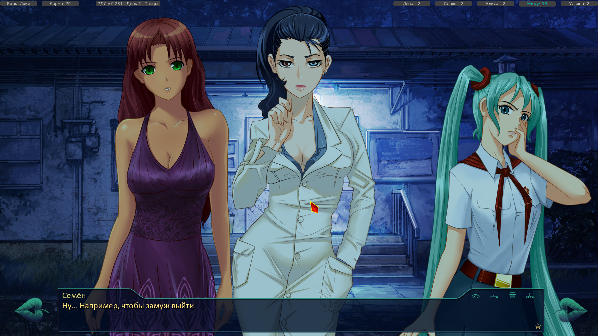
]
следующий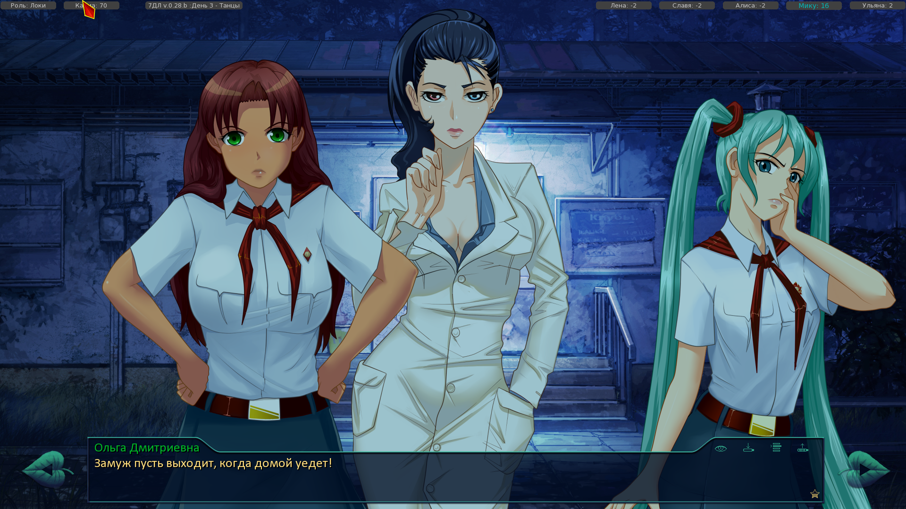
Идут друг за другом, но Ольга сменила тут же одежду.
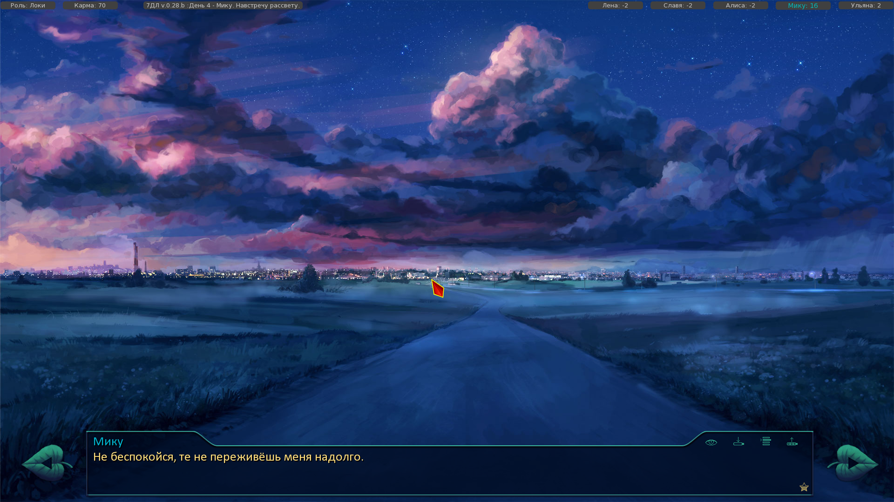
"ты" вместо "те".
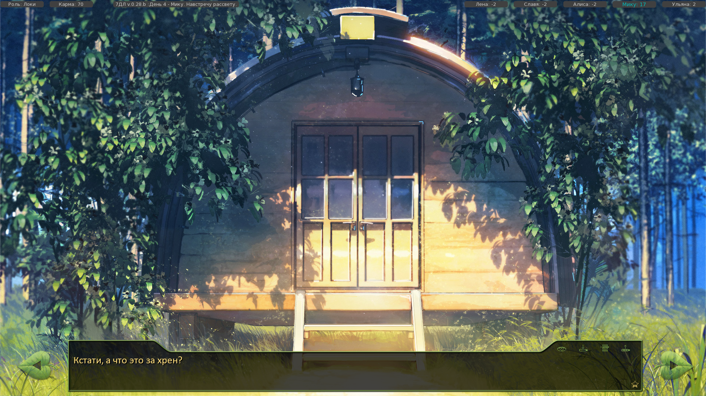
и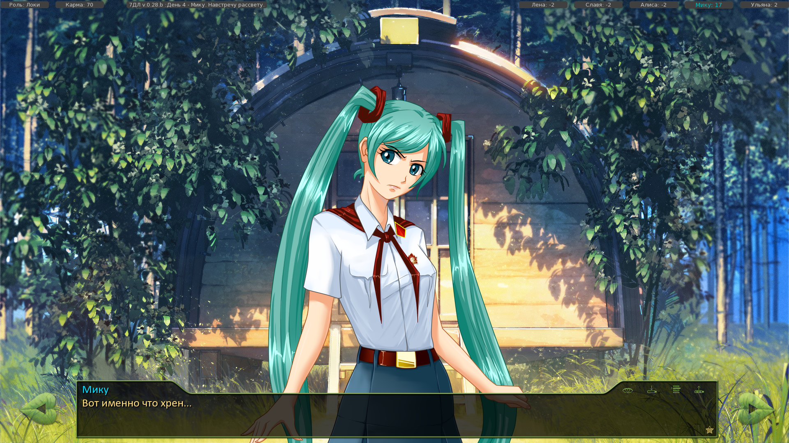
Место где Семен поехал в город без Мику и вернулся, родительский день, она жалуется.
Не отмеченно, что говорит Семен, хотя Мику отвечает.
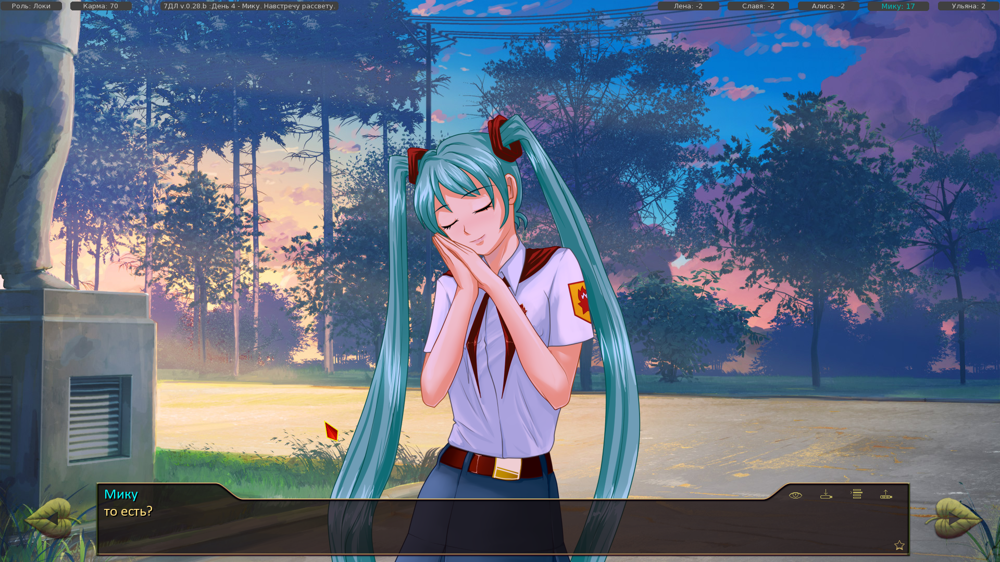
Чуть позже, когда уезжает агент Мику.
"То есть?" начинается с маленькой, а не с большой буквы.
На вечер, после отъезда Сакашити два раза выскакивает переход.
на одном написано "7Дл, день 4, Мику вечер.
А на другом "7Дл День 2, ужин"
Не знаю ошибка или нет, но на всякий случай если ошибка.
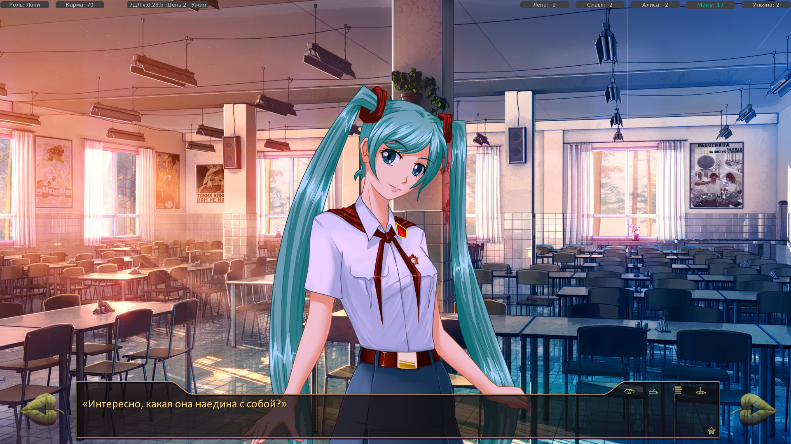
Ошибка в слове "наедина" вместо "наедине".
А все, запустил.
И еще
I'm sorry, but an uncaught exception occurred.
While loading the script.
ScriptError: Name u'alt_day4_uvao_morning_wash' is defined twice: at game/scenario_alt/DLC/UVAO/uvao_route.rpy:92 and game/scenario_alt/Scenario/WIP/queue/alt_route_uv.rpy:92.-- Full Traceback ------------------------------------------------------------
Full traceback:
File "C:\Users\Семья\Desktop\everlasting_summer-1.1-all\renpy\bootstrap.py", line 265, in bootstrap
renpy.main.main()
File "C:\Users\Семья\Desktop\everlasting_summer-1.1-all\renpy\main.py", line 226, in main
renpy.game.script.load_script() # sets renpy.game.script.
File "C:\Users\Семья\Desktop\everlasting_summer-1.1-all\renpy\script.py", line 177, in load_script
self.load_appropriate_file(".rpyc", ".rpy", dir, fn, initcode)
File "C:\Users\Семья\Desktop\everlasting_summer-1.1-all\renpy\script.py", line 436, in load_appropriate_file
if self.load_file(dir, fn + compiled, initcode):
File "C:\Users\Семья\Desktop\everlasting_summer-1.1-all\renpy\script.py", line 320, in load_file
self.finish_load(stmts, initcode)
File "C:\Users\Семья\Desktop\everlasting_summer-1.1-all\renpy\script.py", line 392, in finish_load
node.filename, node.linenumber))
ScriptError: Name u'alt_day4_uvao_morning_wash' is defined twice: at game/scenario_alt/DLC/UVAO/uvao_route.rpy:92 and game/scenario_alt/Scenario/WIP/queue/alt_route_uv.rpy:92.Windows-post2008Server-6.2.9200
Ren'Py 6.16.3.502
I'm sorry, but an uncaught exception occurred.
While loading the script.
ScriptError: Name u'alt_day4_start_uvao' is defined twice: at game/scenario_alt/DLC/UVAO/uvao_route.rpy:1 and game/scenario_alt/Scenario/WIP/queue/alt_route_uv.rpy:1.-- Full Traceback ------------------------------------------------------------
Full traceback:
File "C:\Users\Семья\Desktop\everlasting_summer-1.1-all\renpy\bootstrap.py", line 265, in bootstrap
renpy.main.main()
File "C:\Users\Семья\Desktop\everlasting_summer-1.1-all\renpy\main.py", line 226, in main
renpy.game.script.load_script() # sets renpy.game.script.
File "C:\Users\Семья\Desktop\everlasting_summer-1.1-all\renpy\script.py", line 177, in load_script
self.load_appropriate_file(".rpyc", ".rpy", dir, fn, initcode)
File "C:\Users\Семья\Desktop\everlasting_summer-1.1-all\renpy\script.py", line 436, in load_appropriate_file
if self.load_file(dir, fn + compiled, initcode):
File "C:\Users\Семья\Desktop\everlasting_summer-1.1-all\renpy\script.py", line 320, in load_file
self.finish_load(stmts, initcode)
File "C:\Users\Семья\Desktop\everlasting_summer-1.1-all\renpy\script.py", line 392, in finish_load
node.filename, node.linenumber))
ScriptError: Name u'alt_day4_start_uvao' is defined twice: at game/scenario_alt/DLC/UVAO/uvao_route.rpy:1 and game/scenario_alt/Scenario/WIP/queue/alt_route_uv.rpy:1.Windows-post2008Server-6.2.9200
Ren'Py 6.16.3.502
Возможно что-то напутал. Просто в старых версиях можно было не идти на сцену в 3 дне, а сразу к Мику и тогда была сценка с ежиком, а если идти на сцену, то выход на сценку с захватом радио. А после введения, что только через сцену (что по мне странно) на рут DJ, хотел узнать условия выхода на ежа.
Нет, вы не поняли, там раньше шло как: не шел на сцену, была сценка с ежиком и подарком для спасителя. Шел на сценку была сценка с захватом радио и трансляцией музыки. А сейчас выход за счет чего идет на ежика? Или что то изменилось?
PS:за наводку на игру Katawa Shoujo спасибо, действительно хорошая.
Слушайте, все хотел спросить, раньше была сценка с ежиком, когда ты шел не на DJ, а просто (на сцену не шел, а сразу к Мику в 3 день). Сейчас на неё же тоже выход есть?
А как же ответы типа: Да, нет, почти, практически нет. Они облегчили мне душу.
Там просто переход непонятен в конце, то ли продолжение одного, то ли разные концовки.
Это, про клуб 27 мне покоя не дает, там две концовки или нет? и вообще там так получается?
В одной Семен жив, получил письмо из прошлого, вернулся к Мику, с чего и начинается рассказ, когда она сама себе желает Дня рождения и идет в ванну, а он с балкона отвечает. Это её порридж? Там еще написано он наблюдал перфоманс её - это как она с Сакашитой переспала?
Второй, она осталась с Сакишита, переспала с ним, но после его ухода, на подарке увидела фотографию Семена и себя. Но это порридж отца?
И ещё предпоследняя глава, где она с отцом наперегонки пыталась коснуться материи. Они оба коснулись и создали порриджи? И посланец говорил глупец отцу, что он создал поридж где она не счастлива?
Или я ни черта не понял?
Тогда боюсь игру никто не поймет. Все равно просто хочется узнать, правильно или неправильно понял мысль.
Ну как то не очень.
Слушайте, я тут клуб 27 прочитал, и самую концовку не совсем понял. Там получается их две?
В одной Семен жив, получил письмо из прошлого, вернулся к Мику, с чего и начинается рассказ, когда она сама себе желает Дня рождения и идет в ванну, а он с балкона отвечает. Это её порридж? Там еще написано он наблюдал перфоманс её - это как она с Сакашитой переспала?
Второй, она осталась с Сакишита, переспала с ним, но после его ухода, на подарке увидела фотографию Семена и себя. Но это порридж отца?
И ещё предпоследняя глава, где она с отцом наперегонки пыталась коснуться материи. Они оба коснулись и создали порриджи? И посланец говорил глупец отцу, что он создал поридж где она не счастлива?
-....., какого хуя? Я пытался пройти на рут Алисы, заработал 12 очков на 3 день, но после сцены, где она извинилась, Семена выбрасывает в реальность и все кончается. МММ???
-Да, ...., не было не какого qte по ходу прохождения.
-...... так это qte, я даже не замечал ...... . Ну я его прошел, зато теперь игра после него крашится.
Просто победитель по жизни.
Проходил тут ваш фанфик...
В Мику-руте наткнулся на сцену, где ХАТСУНЕ ...... . Если в оригинальном БЛ можно было косвенно провести параллели, то здесь прямым текстом показывают Хатсуне, мать его, Мику. Круто, пожимаю руку автору. Вымышленное аниме в вымышленном мирке. Мику поёт на крыльце муз кружка. И знаете, что за песня шла на фоне? Может песня Хатсуне Мику? Нет! Фоном шла Outer Science, которую поёт Jin, а не Hatsune. youtube.com/watch?v=E0q7B1W6ANs
То есть, этот ....... 7дл-кун даже отличить вокалоидов друг от друга не может. Что, ..., за неуважение?! Видимо, это слишком трудно: набрать "Hatsune Miku songs" и выбрать что-нибудь аутентичное руту.
В рот .... этот ...... . Хатсуне Мику в пионер-лагере 80ых страдает от одиночества и имеет русские корни.
В оригинале этот персонаж был добавлен чисто для фансервиса и не подразумевал собой отдельную личность, достойную внимания. Но этот мододел решил взять этот образ и выдумать абсурдную до ....... историю. И вы, дауны-говноеды, жрёте это. С таким же успехом он бы мог взять вожатую, Электроника, медсестру и сделать по 30 отдельных рутов oh, wait...
Конечно толсто, но по мне, забавно.
Вот с голубым небом
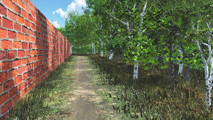
и то, что получилось
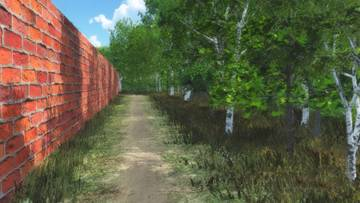
или это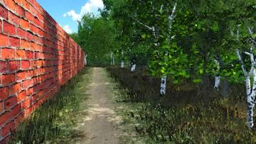
Эх, жаль у нас не Катава...
А что это такое?
А на какой программе вообще делались BG? Или от руки рисовали?
То что получилось, лучше у меня не выйдет.
Но как по мне, та лучше выглядит. Если найдется умелец, то пусть подредактирует.
Перевести в рисованный вид, чтоб не выглядело компьютерным?
Дорога вдоль периметра лагеря
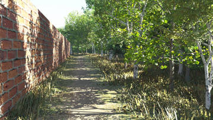
Вы здесь » 7 дней лета » Результаты поиска